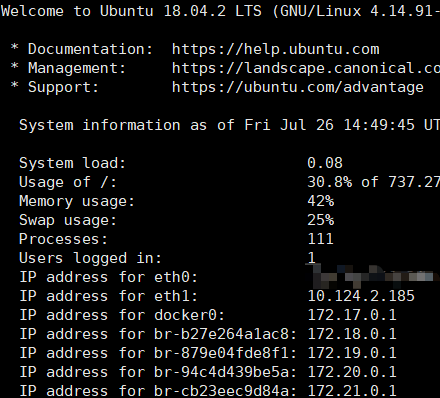
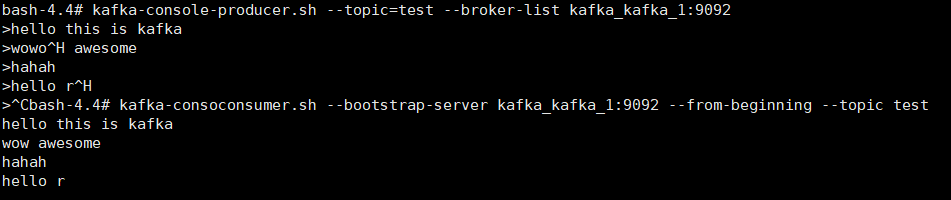

Docker搭建Kafka
准备在项目中学习Kafka，因此准备在Linux环境下使用Docker搭建Kafka环境。
准备
我使用的是Ubuntu 16.04，已经安装好Docker和Docker Compose。Kafka没有官方镜像，但是有知名的第三方镜像wurstmeister/kafka ，同时，需要用zookeeper管理kafka，因此可以用wurstmeister/zookeeper
使用docker-compose
1 | version: '3.0' |
指定
KAFKA_HEAP_OPTS是由于我的主机内存小，需要限制内存，否则无法启动。如果主机内存足够，不需要限制KAFKA_ADVERTISED_HOST_NAME需要用到宿主机的IP。在Ubuntu18.04中，每次登陆都会显示系统信息，docker0就是填写的宿主机ip。

在Ubuntu16.04中，可以使用下面的命令查询：1 | ip addr show docker0 |
查询结果为：172.18.0.1
启动kafka
1 | docker-compose up -d |
之后通过 docker ps 可以看到启动了一个zookeeper容器和一个kafka容器。
验证
- 进入到kafka容器中
1 | docker exec -it kafka_kafka_1 /bin/bash |
- 创建一个topic，
1 | bash-4.4> kafka-topics.sh --create --topic test --zookeeper kafka_zookeeper_1:2181 --replication-factor 1 --partitions 1 |
- 发布几条消息
1 | bash-4.4> kafka-console-producer.sh --topic=test --broker-list kafka_kafka_1:9092 |
- 接受消息
1 | bash-4.4> kafka-console-consumer.sh --bootstrap-server kafka_kafka_1:9092 --from-beginning --topic test |

接收到了发布的消息，部署正常。
待解决
使用Spring Boot整合Kafka时发现无法连接，一直报错[Producer clientId=producer-1] Connection to node 1001 could not be established. Broker may not be available.显示Google了好久暂时未解决，猜测是由于使用Docker，内外网ip没有设置正确，导致外网无法访问。